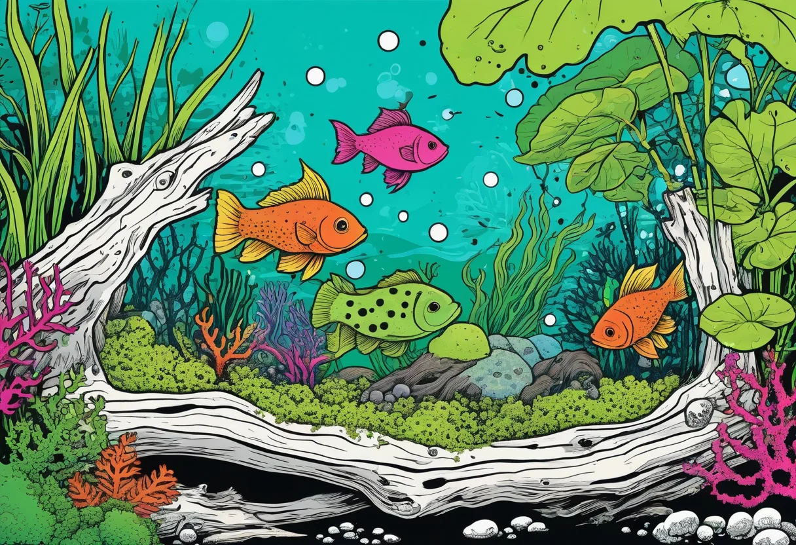

Moos ist aus der modernen Aquaristik nicht mehr wegzudenken. Egal ob du ein dichtes Moos-Teppich auf einem Lavastein anlegen, einen Moos-Baum als Gestaltungselement erschaffen oder einfach nur eine pflegeleichte Hintergrundbepflanzung suchst – Aquarium-Moose sind extrem vielseitig, anspruchslos und optisch ein echter Hingucker.
In diesem Guide erfährst du alles über die beliebtesten Moosarten fürs Aquarium: Javamoos (Taxiphyllum barbieri), Christmas Moos (Vesicularia montagnei) und natürlich die kultigen Mooskugeln (Aegagropila linnaei / Marimo). Wir schauen uns die Unterschiede an, wie du sie befestigst, vermehrst und in deinem Becken gekonnt in Szene setzt.
Moose gehören zu den ältesten Pflanzen der Erde. Unter Wasser entfalten sie ihre ganz eigene Ästhetik: Zarte, fein verzweigte Wedelstrukturen, sattes Grün und eine fast schon samtige Optik. Doch Moose können noch viel mehr:
Moose sind also nicht nur hübsch anzusehen, sie leisten auch einen aktiven Beitrag zur Wasserqualität und zum Wohlbefinden deiner Beckenbewohner.
In Aquarien haben sich vor allem drei Moosarten etabliert. Jede hat ihre eigenen Vorzüge und ihren typischen Wuchscharakter. Hier siehst du die wichtigsten Unterschiede auf einen Blick:
| Merkmal | Javamoos | Christmas Moos | Mooskugel (Marimo) |
|---|---|---|---|
| Wuchsform | Fächerartig, flach aufliegend | Dicht, buschig, weihnachtsbaumartig | Kugelförmig (kann sich auflösen) |
| Lichtbedarf | Niedrig – mittel | Mittel | Niedrig – mittel |
| Wachstumsgeschwindigkeit | Langsam – mittel | Langsam | Sehr langsam |
| Temperatur | 18–30 °C | 20–28 °C | 5–28 °C |
| pH-Wert | 5,5–8,0 | 5,5–7,5 | 6,0–8,0 |
| Schwierigkeitsgrad | ★☆☆ (Anfänger) | ★★☆ (Fortgeschritten) | ★☆☆ (Anfänger) |
Javamoos ist ohne Zweifel das bekannteste und am weitesten verbreitete Aquarienmoos. Es stammt ursprünglich aus Südostasien – genauer gesagt aus Java, Indonesien – und hat sich aufgrund seiner enormen Anpassungsfähigkeit zur beliebtesten Moosart in der Aquaristik entwickelt.
Javamoos wächst fächerartig und bildet flache, dichte Polster aus. Die Wedel sind fein verzweigt und werden etwa 3–10 cm lang. Es haftet mit feinen Rhizoiden (Haftfäden) auf Oberflächen, ist aber kein Parasit – es entzieht dem Untergrund keine Nährstoffe. Typisch ist der eher horizontale, flächige Wuchs, der an Steinen und Wurzeln besonders schön zur Geltung kommt.
Javamoos ist extrem genügsam. Es kommt mit wenig Licht aus – selbst in schattigen Ecken wächst es zuverlässig. Eine Düngung ist nicht zwingend erforderlich, fördert aber ein kräftigeres, satteres Grün. Auch CO₂ ist optional. Die optimale Temperatur liegt zwischen 22 und 28 °C. Unter guten Bedingungen wächst es etwa 2–5 cm pro Monat und sollte regelmäßig zurückgeschnitten werden, damit es nicht von unten her vergreist (braun wird).
Du kannst Javamoos ganz einfach mit Angelsehne, Nähgarn (Baumwolle zersetzt sich mit der Zeit) oder Spezialkleber (Aquarienkleber) auf Wurzeln oder Steinen befestigen. Alternativ legst du es zwischen zwei flache Steine oder klemmst es in Spalten – die Rhizoide sorgen nach einigen Wochen für festen Halt. Verwende auf keinen Fall herkömmlichen Haushaltskleber!
Die Vermehrung ist kinderleicht: Nimm einfach einen Teil des Moospolsters und schneide es mit einer scharfen Schere in kleinere Stücke. Diese setzt du an einer anderen Stelle im Becken neu auf. Aus jedem Fragment wächst ein neuer Moospolster heran – es ist also quasi unerschöpflich.
💡 Tipp: Javamoos eignet sich hervorragend für Mooswände (mit Kunststoffnetz) oder als Hintergrundbepflanzung an der Rückwand. Einfach zwischen zwei Gitternetzen fixieren und senkrecht ins Becken stellen – nach wenigen Wochen ist die Fläche dicht bewachsen.
Christmas Moos verdankt seinen Namen der charakteristischen Wuchsform: Die feinen Seitentriebe sind dicht gefiedert und erinnern an Tannenzweige – oder eben an einen kleinen Weihnachtsbaum. Es wird oft als die schönere Alternative zu Javamoos bezeichnet und ist bei Aquascapern besonders beliebt.
Im Gegensatz zum eher flächig wachsenden Javamoos bildet Christmas Moos dichte, buschige Polster mit einer sehr feinen, gleichmäßigen Struktur. Die Triebe stehen aufrecht bis überhängend und erreichen eine Höhe von 3–8 cm. Unter guten Lichtbedingungen zeigt sich ein intensives, helles Grün. Christmas Moos wächst etwas langsamer als Javamoos, belohnt aber mit einer wesentlich kompakteren und edleren Optik.
Christmas Moos stellt etwas höhere Ansprüche als Javamoos. Es bevorzugt eine mittlere Beleuchtungsstärke und profitiert deutlich von einer regelmäßigen CO₂-Düngung. Ohne CO₂ wächst es zwar auch, bleibt aber weniger dicht und kompakt. Die optimale Temperatur liegt zwischen 22 und 26 °C. Regelmäßiger Rückschnitt ist wichtig, damit die unteren Bereiche nicht vergilben.
Wie Javamoos lässt sich auch Christmas Moos mit Garn oder Kleber auf Hartscape-Elementen fixieren. Aufgrund des dichteren Wuchses eignet es sich besonders gut für Moos-Bäume (Moss Trees), bei denen auf einer aufrechten Wurzel oder einem Stein eine kugelige Mooskrone entsteht. Christmas Moos behält dabei seine kompakte Form.
Auch hier gilt: Teilen und neu aufsetzen. Schneide kräftige, gesunde Triebspitzen ab und befestige sie an einer neuen Stelle. Mit etwas Geduld entsteht ein weiterer dichter Busch.
💡 Tipp: Christmas Moos eignet sich perfekt für Aquascaping-Wettbewerbe. Die feine, symmetrische Struktur wirkt besonders edel, wenn du es auf einem markanten Stein oder einer Moorkienwurzel platzierst – am besten mit leichtem Kontrast im Hintergrund, zum Beispiel dunklem Bodengrund.
Streng genommen ist die Mooskugel gar kein Moos, sondern eine seltene Algenart (Cladophora aegagropila) aus kühlen Seen Japans und Islands. Im Handel wird sie aber traditionell als Mooskugel oder Marimo verkauft und zählt zur Kategorie "Moos". Ihre samtig-grüne Kugelform macht sie zu einem der ungewöhnlichsten und beliebtesten Aquarienpflanzen.
Marimo-Kugeln wachsen extrem langsam – etwa 0,5–1 cm pro Jahr. Sie erreichen im Aquarium meist eine Größe von 3–8 cm, können in der Natur aber bis zu 30 cm Durchmesser erreichen. Die Kugelform entsteht durch die ständige, sanfte Strömung, die die Algenfäden gleichmäßig um sich selbst wickelt. Im Aquarium kann sich die Kugelform lösen, wenn das Wasser zu warm oder die Strömung zu schwach ist – dann entsteht eher ein flauschiger Teppich.
Marimo-Kugeln sind sehr pflegeleicht. Sie mögen kühleres Wasser (optimal 18–24 °C) und vertragen auch Temperaturen bis 28 °C nur begrenzt – bei längerer Wärme werden sie braun oder lösen sich auf. Heller, indirekter Lichtplatz ist ideal, direkte Sonneneinstrahlung vermeiden. Einmal pro Woche solltest du die Kugel vorsichtig in der Hand rollen, damit sie ihre runde Form behält und von allen Seiten genug Licht bekommt. Wird sie braun, hilft ein kurzes Bad in kaltem Leitungswasser.
Marimo-Kugeln werden durch Teilung vermehrt. Schneide die Kugel mit einem scharfen Messer durch, wickele die inneren Fäden zu neuen kleinen Kugeln und fixiere sie mit dünnem Faden. Nach einigen Monaten verwachsen die Fäden von selbst – der Faden kann dann entfernt werden. Du kannst auch einfach ein Stück Marimo auf einen flachen Stein legen – es wächst als grüner Teppich weiter.
💡 Tipp: Marimo-Kugeln sind ideale Deko für Garnelenbecken und Nano-Aquarien. Garnelen lieben es, auf den Kugeln zu grasen und nach Futterresten zu suchen. Außerdem kannst du mehrere Kugeln zu einer hübschen Gruppe arrangieren – das wirkt besonders natürlich.
Neben den drei Hauptarten gibt es noch einige weitere Moose, die in der Aquaristik Verwendung finden:
Garnelen und Moos sind ein echtes Traumpaar. Zwerggarnelen wie Red Fire, Blue Dream oder Amano-Garnelen nutzen Moospolster als Weidegrund, Versteck und Laichkammer zugleich. Die feinen Moosstrukturen bieten ideale Bedingungen für den Aufwuchs von Mikroorganismen – der Hauptnahrungsquelle für Garnelen und Jungfische.
Besonders Javamoos und Christmas Moos werden in Garnelenbecken gerne eingesetzt. Die dichten Polster bieten den Tieren nicht nur Schutz vor Fressfeinden, sondern auch einen optimalen Ort für die Häutung, da sie sich hier sicher fühlen. Wer eine aktive Garnelen-Nachzucht plant, kommt um Moos im Aquarium kaum herum.
👉 Aktuelle Moos-Sets für Garnelenbecken bei Amazon entdecken
Moose bieten unzählige Gestaltungsmöglichkeiten. Hier die beliebtesten Ideen für dein Aquarium:
Eine aufrechte Wurzel oder ein Ast wird mit Moos (am besten Christmas Moos oder Weeping Moos) beklebt oder umwickelt. Nach dem Anwachsen entsteht der Eindruck eines Bonsai-Baums unter Wasser – ein echter Hingucker im Aquascape.
Fluval-ähnliche Mooswände oder selbst gebaute PVC-Gitter mit Moos bepflanzt – ideal als Hintergrundabdeckung und natürliche Filterfläche. Javamoos ist hier die erste Wahl.
Lege eine dünne Moosschicht auf einen flachen Lavastein und fixiere sie mit einem Netz oder Garn. Nach einigen Wochen wächst das Moos durch das Netz hindurch und bedeckt den Stein vollständig.
Arrangiere mehrere Mooskugeln in verschiedenen Größen auf einer flachen Steinplatte oder im Vordergrund des Beckens. Dazwischen etwas feiner Kies – fertig ist eine minimalistisch-schöne Iwagumi-Variante.
| Problem | Ursache | Lösung |
|---|---|---|
| Braune, matschige Stellen | Zu wenig Licht / vergreistes Moos | Rückschnitt + helleren Standort wählen |
| Fadenalgen im Moos | Zu viel Licht / Nährstoffungleichgewicht | Licht reduzieren, Algenfresser einsetzen |
| Moos löst sich vom Stein | Zu wenig Zeit zum Anhaften / falsche Befestigung | Neu befestigen, 4–6 Wochen Anwachszeit geben |
| Mooskugel fällt auseinander | Zu warmes Wasser / zu wenig Strömung | Kühleres Wasser, Kugel regelmäßig drehen |
| Gelbe Triebspitzen | Nährstoffmangel (v. a. Eisen, Kalium) | Leichte Düngergabe, am besten Flüssigdünger |
Moose sind die heimlichen Stars im Aquarium. Sie sind pflegeleicht, vielseitig einsetzbar und bereichern jedes Becken – egal ob Gesellschaftsaquarium, Garnelenbecken oder anspruchsvolles Aquascape. Javamoos ist der perfekte Einsteiger, der unter fast allen Bedingungen wächst. Christmas Moos belohnt etwas mehr Pflege mit einer atemberaubend feinen Optik. Und die Mooskugel bringt einen originellen, kugelrunden Blickfang in den Vorder- oder Mittelgrund.
Egal, wofür du dich entscheidest: Mit Moos holst du dir ein Stück Natur ins Becken, das sowohl dir als auch deinen Aquarienbewohnern Freude bereitet. Probier es aus – du wirst begeistert sein!
🔗 Weiterlesen: Du interessierst dich für weitere Aquarienpflanzen? Dann schau dir auch unseren Guide zu pflegeleichten Aquarienpflanzen für Anfänger an oder lies unseren Garnelen-Guide – Moos und Garnelen gehören einfach zusammen!
🛒 Moos für dein Aquarium kaufen
→ Javamoos, Christmas Moos & Mooskugeln bei Amazon entdecken